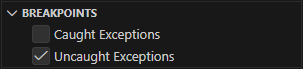
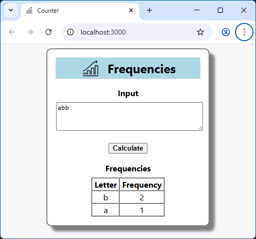
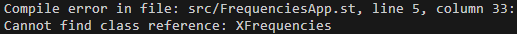

by starting
startWebServer.sh as explained in the Template tutorial page.In VSCode, click the triangle button "Run and Debug" on the left.
In the section "BREAKPOINTS", be sure "Uncaught Exceptions" is checked:

Now press the [F5] key to build and start the app.
If all went well, a browser is launched.
You can enter the input string
abb and press the [Calculate] button.The updated browser page should look like this:

If there was a syntax error on in the Smalltalk code,
the SmallJS compiler will indicate an error and location.
To illustrate this, lets intentionally introduce an error.
In the file
./src/FrequencyApp.st, in the method start ,insert an
X before the class name Frequencies :
After stopping and restarting the app,
the compiler will now give this error in the "TERMINAL" pane of VSCode:

Now you should undo the error before continuing... :)